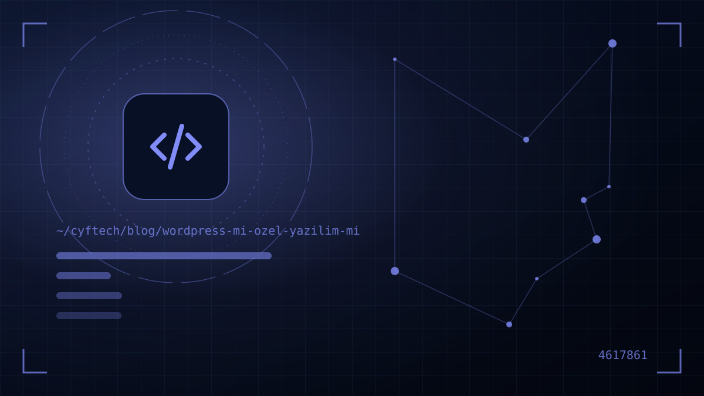

The first big fork in the road in website projects isn’t design but the platform: a ready-made system like WordPress, or software written specifically for you? The wrong choice means either an unnecessarily expensive project or a site that has to be rebuilt two years later.
Online, the answer to this question is usually biased: WordPress experts say everything can be done with WordPress, and software companies say ready-made systems are inadequate. The truth depends on what your business needs.
In this guide we explain the ready-made platform options, WordPress’s strengths and weaknesses, when custom software is really necessary and a simple method you can use to make the decision. As a team that works both ways, we share examples from our own projects of which makes more sense in which situation.
Ready-made platforms and custom software: getting to know the options
A “ready-made platform” isn’t a single thing. Before deciding, you need to separate the options on the table:
- Open-source content management systems (CMS): WordPress is the most common example. The software is free; you pay for themes, plugins, hosting and development work. It runs on your own server, and the code is yours.
- Hosted site builders (SaaS): Platforms with drag-and-drop editors that run on a monthly subscription. You get started quickly, but the platform belongs to the provider; when you cancel the subscription, your site goes too.
- Ready-made e-commerce packages: Hosted e-commerce platforms common in Türkiye; they come with virtual POS, shipping and marketplace integrations, and their scope is limited to the package.
- Custom software: A system developed from scratch or on top of a framework according to your business rules. It has exactly what you need, and nothing more.
In this article we’ll make the comparison using the most frequently asked pair, WordPress versus custom software; however, most of what we say also applies to other ready-made systems.
Where WordPress is strong
WordPress’s popularity is no accident. According to W3Techs data, as of October 2026 about 39.5 percent of all websites in the world, and about 58 percent of sites with a known content management system, use WordPress. The advantages this popularity gives you are:
- Quick start: Basic needs for corporate brochure sites and blogs are ready out of the box; project time is shorter.
- Easy content management: Your team can add pages, news and blog posts without technical knowledge.
- Large plugin ecosystem: There are ready-made solutions for common needs such as forms, multilingual support, SEO and galleries.
- Developers are easy to find: When you change agencies, it is relatively easy to find someone to take over the site.
In short, if your goal is to publish content, present your corporate identity and collect enquiries, a well-built WordPress site is more than enough for most SMEs.
Typical examples: a law firm’s brochure site, an architecture office’s project portfolio, a clinic that publishes articles regularly or a manufacturer showing a product catalogue in several languages. In these projects visitors read content and get in touch; the system doesn’t need to do complex work in the background. What matters here is keeping the theme light, limiting plugins to those that are truly necessary and updating regularly.
WordPress’s weaknesses: plugins, security and performance
The plugin ecosystem, WordPress’s greatest strength, is also its greatest risk. Each plugin comes from a different developer, has a different update schedule and loads extra code onto your site.
According to security firm Patchstack’s 2026 report, 11,334 new vulnerabilities were recorded in the WordPress ecosystem in 2025; about 91 percent were in plugins and 9 percent in themes, while only a few low-priority vulnerabilities were reported in WordPress core. According to the same report, 46 percent of vulnerabilities had no patch yet when they were publicly disclosed.
Other limitations:
- Performance: Heavy page builders and multipurpose themes can add hundreds of kilobytes of unused code to a page. This lowers Core Web Vitals scores.
- Complex business rules: When role-based permissions, approval flows, custom pricing or ERP integration are “patched” with plugins, the system becomes fragile.
- Update dependency: Updating one plugin can break another; regular maintenance is essential.
When is custom software really necessary?
Custom software makes sense not because it is “more prestigious” but when your business doesn’t fit the mould of a ready-made system. If you see several of these signs, you should seriously consider custom software:
- The site is actually an application: Users log in, create records, carry out transactions and look at reports.
- You have unique business processes: Quote calculation, booking rules, dealer-specific pricing or multi-step approval flows.
- Heavy integration is needed: Continuous data exchange with ERP, accounting, e-invoicing, virtual POS, SMS and shipping systems.
- The same data will be used across multiple channels: A web panel, mobile app and desktop app will all be fed from a single server.
- The product itself is software: You are building a platform you’ll sell by subscription.
Our own product KATSİS is a good example: in apartment and residential complex management, dues and debt tracking, cash management, announcements, support requests, virtual POS and SMS are all in the same system; web, iOS, Android and Windows apps run on a single infrastructure. Building this on top of a CMS with plugins would not have been possible. You can explore projects like this on the projects page.
For the custom software process, scoping and phased development methods, see custom software development.
WordPress vs custom software comparison table
| Criterion | WordPress (ready-made platform) | Custom software |
|---|---|---|
| Initial cost | Low – medium | Medium – high |
| Time to launch | A few weeks | A few months, depending on scope |
| Content management | Ready and easy | Designed around your needs |
| Flexibility | Limited by themes and plugins | Fits your business rules exactly |
| Performance | Good with a good setup, weak with heavy themes | Only the necessary code is loaded |
| Security | Directly related to the number of plugins and maintenance | Small attack surface; security depends on the team’s discipline |
| Integration | Easy if a ready-made plugin exists, hard if not | Designed in from the start |
| Maintenance | Frequent updates required | Less frequent but requires an expert |
| Dependency | On plugin developers | On the team that develops the software |
There is no “winner” in the table; each row carries weight according to your priorities. If launching quickly is your top priority, the left column stands out; if long-term flexibility and integration are your top priority, the right column does.
Calculating cost correctly: total cost of ownership
The most common mistake in the platform decision is comparing only the setup fee. A proper comparison looks at the total cost over three years:
- Setup: Design, development, content entry.
- Licences: Annual renewals for premium themes and plugins (most are priced in foreign currency).
- Maintenance: Updates, backups, security monitoring, bug fixes.
- Workarounds: Manual effort or extra plugins for things the ready-made system can’t do.
- Rebuild risk: The price you’ll pay if you have to rebuild the system from scratch as you grow.
For a simple corporate site, WordPress is usually still more economical after three years. But if work is done manually on your site every day, the time custom software saves through automation can quickly close the gap. You can find the overall picture of price items in our article on website prices.
The cheapest platform is the one you don’t have to rebuild from scratch two years later.
4 common misconceptions about choosing a platform
Some beliefs we often encounter in quote meetings can steer the decision in the wrong direction. Let’s briefly correct the four most common:
“WordPress is free, so the site will be cheap.”
The software licence is free, but the site’s design, setup, content entry, premium plugins, hosting and maintenance are paid. Only the starting point is free; a well-built WordPress site also requires professional work.
“Custom software is always faster.”
Custom software has the potential to be fast because it loads only the code it needs. But unoptimised images, poorly written database queries or a weak server slow custom software down too. Speed depends more on the quality of the implementation than on the platform’s name.
“I can’t update content myself with custom software.”
A good custom software project comes with an admin panel that is easy for the content team to use. What can be edited in the panel should be discussed at the start of the project and written into the scope.
“If I choose a ready-made system, I won’t be able to grow later.”
Growing doesn’t always mean starting over. A properly built ready-made platform can be extended with a custom module or a separate application when the need arises. What matters is not taking shortcuts at the start that would block this expansion.
A 5-step method for making the decision
This is the simple method we apply together with our clients in meetings:
- Step 1 — Write down, item by item, the tasks the site will have visitors and your team carry out.
- Step 2 — Mark each item as either “showing content” or “carrying out transactions”.
- Step 3 — List the external systems that need to be connected (ERP, accounting, payments, shipping).
- Step 4 — Write down what you expect the site to be doing two years from now.
- Step 5 — If most items are “showing content”, go with a ready-made platform; if “carrying out transactions” and integration dominate, go with custom software.
For projects in between, a hybrid route is also possible: corporate pages and the blog are managed with a CMS, while a customer panel, quote engine or dealer portal is developed as a separate custom application. That way the content team works comfortably and critical business processes sit on a solid foundation.
- Have the tasks the site will perform been written down item by item?
- Are the systems to be integrated known?
- Has a two-year growth plan been discussed?
- Have the plugins and licences to be used been listed?
- Is it clear who is responsible for maintenance and updates?
- Is ownership of the source code and access in the contract?
Frequently asked questions
Is WordPress secure?
WordPress core is regularly updated and quite secure software. The vast majority of vulnerabilities come from plugins and themes. A WordPress site that uses a small number of trusted plugins and is maintained regularly can be run securely.
Is a custom-software website more expensive?
The initial cost is usually higher. However, once licence renewals, plugin dependency and manual workload are taken into account, custom software can be more economical in total cost over three to five years for projects with complex business processes.
Is WordPress good enough for SEO?
Yes, when set up correctly WordPress is good enough for SEO. Rankings are determined more by content quality, site speed, technical structure and user experience than by the platform’s name. With custom software, the same technical SEO rules need to be applied from the start.
Can a WordPress site be migrated to custom software later?
Yes. Content, images and URL structure are transferred to the new system, and 301 redirects are set up for changed URLs. With a planned migration, search engine visibility can be preserved.
For e-commerce: WordPress, a ready-made package or custom software?
For a store with few products and standard sales, ready-made packages or WordPress-based solutions are a quick start. If there is dealer pricing, ERP integration or a unique ordering flow, custom software gives a healthier result.
Final word
The right answer to WordPress versus custom software starts with whether your site will show content or do work. For brochure and content-focused projects, a well-built ready-made platform is fast and economical; if there are business processes, integrations and multi-channel use, custom software offers a more solid foundation in the long run.
If you’re not sure which route makes more sense for your project, bring your list of requirements and get in touch with us. As a team that builds both on ready-made platforms and with custom software, we’ll draw up an impartial roadmap for you; you can also see the scope of our services on the web solutions page.